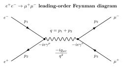

$e^+e^-\to \mu^+\mu^-$ 的 Feynman 图怎么读?
粒子物理教科书讲完 Feynman 规则之后通常都来这个例子, 有理由: 它是 QED 里最简短、最对称、没有辐射纠缠的一个真实可测过程. 初态是两个自旋 1/2 轻子, 质量 $m_e = 0.511$ MeV 小到常被丢掉; 末态是两个自旋 1/2 轻子, 质量 $m_\mu = 105.7$ MeV, 在高能 $\sqrt s \gtrsim$ GeV 下也基本可丢. 中间只有一条虚光子. 整张图除了一个顶点因子、一个传播子、一个顶点因子, 再没别的. 别的 QED 过程 —— Compton 散射、Bhabha 散射 —— 都有两张或更多张 leading-order 图要干涉, $e^+e^-\to\mu^+\mu^-$ 就一张, 因此是最好的入门范例. 但"一张图"并不代表"一步算完": 把它从 Feynman 图走到可测的 nb (纳靶恩), 中间有 5 层技术, 我们一层一层来.
从实验侧看, 这个反应同样干净: 末态是两条穿过探测器的带电轨迹, 背对背, 没什么强子喷注污染; 亮度归一之后把事件数除以探测效率, 就直接给出截面. LEP 在 $\sqrt s \approx 91$ GeV (Z 共振) 取了上千万件这样的事件, 把 QED + 弱电预言压到百分之千分之一级. 所以这是一个既可纸上算、又可真实测的"双向标尺".
一、画一张图: 四条外腿 + 一个传播子
从拉氏量 $\mathcal L_{\rm QED} = \bar\psi(i\gamma^\mu D_\mu - m)\psi - \tfrac14 F_{\mu\nu}F^{\mu\nu}$ 出来的 Feynman 规则, 与 $e^+e^-\to\mu^+\mu^-$ 相关的有四条:
- 外腿 spinor: 入射电子贡献 $u(p_1)$, 入射正电子贡献 $\bar v(p_2)$; 出射 μ⁻ 贡献 $\bar u(p_3)$, 出射 μ⁺ 贡献 $v(p_4)$. 这里 $u, v$ 是 Dirac 方程的 4 分量平面波解, 物理内容是自旋和电荷共轭的选择. 用 $s$ 标自旋. 每个 spinor 是 4 维列或行向量.
- 顶点因子: 每一个 $\bar\psi\gamma^\mu\psi A_\mu$ 顶点贡献 $-ie\gamma^\mu$. 电子和 μ 子顶点形式一模一样, 因为 QED 对所有带单位电荷轻子普适. 下标 $\mu$ 与传播子的洛伦兹指标缩并.
- 光子传播子 (Feynman 规范): $-ig_{\mu\nu}/q^2$, 其中 $q = p_1 + p_2 = p_3 + p_4$ 是虚光子四动量. 我们这里是 $s$-channel: 两条入射粒子相遇, 合并成一个中间态, 再生成两条出射粒子.
- 图论拓扑: 电子线两段 → 一个顶点 → 光子波浪线 → 第二个顶点 → μ 子线两段. 只有这一张 tree-level 图.
按 Feynman 的"从右往左读费米子线"的约定 (因为旋量是右乘 γ 矩阵再左乘 $\bar u$ 闭合的), 把电子侧写成 $\bar v(p_2)(-ie\gamma^\mu)u(p_1)$, μ 子侧写成 $\bar u(p_3)(-ie\gamma^\nu)v(p_4)$. 两者由传播子 $-ig_{\mu\nu}/q^2$ 连接. 总振幅
\begin{equation} i\mathcal M = \big[\bar v(p_2)(-ie\gamma^\mu)u(p_1)\big]\,\frac{-ig_{\mu\nu}}{q^2}\,\big[\bar u(p_3)(-ie\gamma^\nu)v(p_4)\big]. \end{equation}整理一下虚数因子 $(-ie)^2 \cdot (-i) = i\cdot e^2$, 把 $g_{\mu\nu}$ 吃进指标缩并, 得到紧凑形式
$$\mathcal M = \frac{e^2}{q^2}\big[\bar v(p_2)\gamma^\mu u(p_1)\big]\big[\bar u(p_3)\gamma_\mu v(p_4)\big].$$这是一张图的全部物理. 从现在起, 没有新的费曼规则进来, 剩下全是代数 —— 但代数才是真正的绞肉机.

二、Cliché 严格 deepdive: 从 $|\mathcal M|^2$ 到 $\sigma$ 的一条完整推导
这一节必须逐步推, 因为"用 trace 技巧把 Feynman 振幅变成截面"是 QED 教科书里被反复引用却很少被认真写出来的那类 cliché. 我们一步也不省.
第 1 步: 复共轭与行列对调. $|\mathcal M|^2 = \mathcal M\mathcal M^*$. 对旋量二次型 $\bar v\gamma^\mu u$, 复共轭 = Hermite 共轭后取数 (因为它是 $1\times 1$ 矩阵), 利用 $\gamma^{0\dagger}=\gamma^0$, $\gamma^{i\dagger}=-\gamma^i$, 联合 $\bar u = u^\dagger\gamma^0$ 可证 $(\bar v\gamma^\mu u)^* = \bar u\gamma^\mu v$. 于是
$$|\mathcal M|^2 = \frac{e^4}{q^4}\big[\bar v(p_2)\gamma^\mu u(p_1)\big]\big[\bar u(p_1)\gamma^\nu v(p_2)\big]\cdot\big[\bar u(p_3)\gamma_\mu v(p_4)\big]\big[\bar v(p_4)\gamma_\nu u(p_3)\big].$$注意 μ 子侧我用了 $\gamma_\mu \cdots \gamma_\nu$, 电子侧用 $\gamma^\mu\cdots\gamma^\nu$, 两边指标上下配平.
第 2 步: 自旋求平均 / 求和. 对撞机的电子束与正电子束不极化, 因此初态 2 粒子各有 2 种自旋, 要对 $2\times 2 = 4$ 种初态自旋平均 (除以 4); μ⁻、μ⁺ 探测器不区分自旋, 因此对末态两自旋求和. 平均自旋后的模平方写作 $\overline{|\mathcal M|^2} = \tfrac14\sum_{\rm spins}|\mathcal M|^2$. 关键代数身份来自 Dirac 方程的平面波解
$$\sum_s u_s(p)\bar u_s(p) = \slashed p + m, \qquad \sum_s v_s(p)\bar v_s(p) = \slashed p - m,$$其中 $\slashed p \equiv \gamma^\mu p_\mu$. 证明就是 Dirac 方程 $(\slashed p - m)u = 0$ 的投影表述. 有了这两条, 旋量二次型里的"自由指标加自旋求和"立刻变成"γ 矩阵的迹":
$$\sum_{s_1 s_2}\bar v(p_2)\gamma^\mu u(p_1)\bar u(p_1)\gamma^\nu v(p_2) = \mathrm{Tr}\big[(\slashed p_2 - m_e)\gamma^\mu(\slashed p_1 + m_e)\gamma^\nu\big].$$之所以变成 trace, 是因为两侧 spinor 被拉到对角排成循环, 对 4 维旋量求和等价于 trace. 同理 μ 子侧
$$\sum_{s_3 s_4}\bar u(p_3)\gamma_\mu v(p_4)\bar v(p_4)\gamma_\nu u(p_3) = \mathrm{Tr}\big[(\slashed p_3 + m_\mu)\gamma_\mu(\slashed p_4 - m_\mu)\gamma_\nu\big].$$于是
$$\overline{|\mathcal M|^2} = \frac{e^4}{4 q^4}\,L_e^{\mu\nu}\,L^{(\mu)}_{\mu\nu},$$其中 $L_e^{\mu\nu}$ 与 $L^{(\mu)}_{\mu\nu}$ 分别是电子侧和 μ 子侧的 leptonic tensor.
第 3 步: 算 trace. 在高能极限 $s\gg m_e^2, m_\mu^2$, 两个质量都丢掉, 用三条基础 trace 恒等式就够:
- $\mathrm{Tr}(\gamma^\mu\gamma^\nu) = 4\eta^{\mu\nu}$,
- $\mathrm{Tr}(\gamma^\mu\gamma^\nu\gamma^\rho) = 0$ (奇数 γ 迹为零),
- $\mathrm{Tr}(\gamma^\mu\gamma^\nu\gamma^\rho\gamma^\sigma) = 4(\eta^{\mu\nu}\eta^{\rho\sigma} - \eta^{\mu\rho}\eta^{\nu\sigma} + \eta^{\mu\sigma}\eta^{\nu\rho})$.
代入电子 tensor (令 $m_e=0$):
$$L_e^{\mu\nu} = \mathrm{Tr}(\slashed p_2\gamma^\mu\slashed p_1\gamma^\nu) = 4\big(p_1^\mu p_2^\nu + p_1^\nu p_2^\mu - (p_1\cdot p_2)\eta^{\mu\nu}\big).$$同样 μ 子 tensor (令 $m_\mu=0$):
$$L^{(\mu)}_{\mu\nu} = 4\big(p_{3\mu}p_{4\nu} + p_{3\nu}p_{4\mu} - (p_3\cdot p_4)\eta_{\mu\nu}\big).$$两 tensor 缩并需要一点耐心, 把所有项展开
$$L_e^{\mu\nu}L^{(\mu)}_{\mu\nu} = 16\cdot 2\big[(p_1\cdot p_3)(p_2\cdot p_4) + (p_1\cdot p_4)(p_2\cdot p_3)\big].$$第 4 步: 用 Mandelstam 变量重写. 定义 $s = (p_1+p_2)^2 = (p_3+p_4)^2$, $t = (p_1-p_3)^2$, $u = (p_1-p_4)^2$. 在 massless 极限 $s+t+u=0$, $p_1\cdot p_2 = s/2$, $p_3\cdot p_4 = s/2$, $p_1\cdot p_3 = p_2\cdot p_4 = -t/2$, $p_1\cdot p_4 = p_2\cdot p_3 = -u/2$. 代入
\begin{equation} \overline{|\mathcal M|^2} = \frac{e^4}{4 s^2}\cdot 16\cdot 2\cdot\frac{t^2+u^2}{4} = \frac{2e^4(t^2+u^2)}{s^2}, \end{equation}其中我用 $q^2 = s$ (s-channel). 到此 $\overline{|\mathcal M|^2}$ 是关于 $s, t$ 的一个纯代数函数, 自旋、γ 矩阵全部不见了.
第 5 步: Lorentz 不变相空间 + 截面公式. 差分截面公式 (2→2 散射, 质心系) 是
$$\frac{d\sigma}{d\Omega} = \frac{1}{64\pi^2 s}\frac{|\mathbf p_3|}{|\mathbf p_1|}\overline{|\mathcal M|^2}.$$在 massless 极限 $|\mathbf p_3|/|\mathbf p_1| = 1$. 质心系下 $t = -\tfrac{s}{2}(1-\cos\theta)$, $u = -\tfrac{s}{2}(1+\cos\theta)$, 因此 $t^2+u^2 = \tfrac{s^2}{2}(1+\cos^2\theta)$. 代入
$$\frac{d\sigma}{d\Omega} = \frac{1}{64\pi^2 s}\cdot\frac{2e^4}{s^2}\cdot\frac{s^2}{2}(1+\cos^2\theta) = \frac{e^4}{64\pi^2 s}(1+\cos^2\theta) = \frac{\alpha^2}{4s}(1+\cos^2\theta),$$用 $\alpha = e^2/(4\pi)$. 对 $d\Omega = d\cos\theta\,d\varphi$ 积分, $\varphi$ 给 $2\pi$, $\cos\theta$ 从 $-1$ 到 $1$ 给 $\int(1+\cos^2\theta)d\cos\theta = 2 + 2/3 = 8/3$. 总截面
\begin{equation} \boxed{\;\sigma(e^+e^-\to\mu^+\mu^-) = \frac{4\pi\alpha^2}{3s}\;} \qquad (s\gg m_\mu^2). \end{equation}干净到可以刻在 T 恤上. 再无手工调参, 从拉氏量一路推到可测的 nb, 中间唯一输入是 $\alpha \approx 1/137$.
三、角分布、极限、与正反散射
差分截面 $d\sigma/d\Omega \propto 1+\cos^2\theta$ 是一条物理意义很重的结果. 首先它关于 $\theta \leftrightarrow \pi - \theta$ 对称 —— 正向与反向一样多, 没有前 - 后不对称性. 原因是 s-channel 只有一条图, 没有 $Z^0$ (只要能量远离 Z 极点) 所以 parity 不乱. 其次它在 $\theta = \pi/2$ 取最小值, 在 $\theta = 0, \pi$ 取最大值. 平均角分布 $\langle 1+\cos^2\theta\rangle = 4/3$.
接下来是几个重要极限检验:
- 高能极限 $s \gg m_\mu^2$: 上面推的就是这个极限, $\sigma \to 4\pi\alpha^2/(3s)$. 整个 γ 矩阵 trace 都是"无质量极限", 质量修正是 $\mathcal O(m^2/s)$.
- 阈值极限 $\sqrt s \to 2m_\mu$: 能量刚够产生 μ 对, 相空间 $|\mathbf p_3|/|\mathbf p_1| = \sqrt{1 - 4m_\mu^2/s} \to 0$, 截面从高能公式处掉下来, 呈 $\propto\beta_\mu\cdot(3-\beta_\mu^2)/2$ 的形式 ($\beta_\mu$ 是末态速度). 这是相空间封闭效应, 不依赖动力学.
- 远低能 $s\to 0$: 公式形式上发散, 但 $s = (p_1+p_2)^2 \ge (2m_e)^2$ 始终有下界, 实际上更重要的是 $s \lt (2m_\mu)^2 = (211.4\,\mathrm{MeV})^2$ 区间根本没有 μ 对产生, 截面严格为零. 高能公式 $\sigma = 4\pi\alpha^2/(3s)$ 只在 $s \gg 4m_\mu^2$ 有效.
- Z 极点附近: 真实世界的振幅还要加上一张 $Z^0$ s-channel 图, 两者干涉; 在 $\sqrt s \approx M_Z = 91.2$ GeV 附近, $Z$ 传播子 $\sim 1/(s-M_Z^2 + iM_Z\Gamma_Z)$ 共振放大, 截面从纯 QED 的 $\sim 2$ nb 跳到约 30 nb (大致 10 倍提升, 精确值见下节数字).
顺便观察: 公式 $\sigma \propto 1/s$ 表示能量越高截面越小. 这是电磁相互作用在高能下被"稀释"的典型特征, 对比 QCD 强子截面随能量缓慢增大 (Froissart 边界内), 就看出两者非常不同. 这也解释了为什么对撞机要追求极高亮度才能在高能获取足够事件数.
四、数字落地: 10 GeV 做标尺, Z 共振做放大器, 以及 Feynman 的 1949
把公式 $\sigma = 4\pi\alpha^2/(3s)$ 用实验常用单位重算一遍. 在自然单位下 $(\hbar c)^2 \approx 0.3894\,\mathrm{GeV}^2\cdot\mathrm{mb}$, $\alpha = 1/137.036$. 代入
$$\sigma \approx \frac{4\pi}{3\cdot(137.036)^2\cdot s/\mathrm{GeV}^2}\cdot 0.3894\,\mathrm{mb} \approx \frac{86.8\,\mathrm{nb}}{s/\mathrm{GeV}^2}.$$这是一条在粒子物理圈里几乎人人背得的"工程公式": $\sigma(e^+e^-\to\mu^+\mu^-) \approx 86.8\,\mathrm{nb}/(s\,\mathrm{in}\,\mathrm{GeV}^2)$. 它被叫做point cross section (点截面), 是衡量所有其它 $e^+e^-$ 过程的基准标尺. 实际上实验物理学家经常用"比例 $R$"
$R \equiv \sigma(e^+e^-\to\mathrm{hadrons})/\sigma(e^+e^-\to\mu^+\mu^-)$ 来表达强子总截面, 因为这么一除就把共同的能量依赖 $1/s$ 约掉了, 剩下的 $R$ 是 QCD + 夸克电荷的纯结构量, 历史上直接用来数色荷数 $N_c = 3$.
数字 1: $\sqrt s = 10$ GeV (BaBar / Belle). $s = 100\,\mathrm{GeV}^2$, $\sigma \approx 86.8/100 = 0.868\,\mathrm{nb} \approx 0.87$ nb. $\Upsilon(4S)$ b 工厂就运行在这个能区, μ 对产生是亮度刻度器 —— 测得的 $\mu^+\mu^-$ 事件数除以理论 0.87 nb 就反推得到积分亮度, 再用它归一所有其它测量.
数字 2: $\sqrt s = M_Z = 91.2$ GeV (LEP). $s = 8318\,\mathrm{GeV}^2$, 纯 QED 给 $\sigma_{\rm QED} \approx 86.8/8318 \approx 10.4$ pb. 但真正测到的是约 $1.5$ nb = 1500 pb, 高了大约 150 倍! 原因就是我们上一节说的: 在 Z 极点附近 $Z^0$ 交换图共振放大. 精确公式 (含 Z 宽度 $\Gamma_Z \approx 2.495$ GeV)
$$\sigma_{\rm Z-peak} \approx \sigma_{\rm QED}\cdot\left[1 + \left(\frac{M_Z^2}{\Gamma_Z^2}\right)(\text{Z couplings factor})\right].$$峰值处 $M_Z/\Gamma_Z \sim 37$, 放大因子 $(M_Z/\Gamma_Z)^2 \sim 1360$ 再乘以 couplings 组合, 和实验上的 Breit-Wigner 拟合给的 $\sigma_{\rm peak}(\mu^+\mu^-) \approx 2.0$ nb 吻合. LEP 四个实验 ALEPH, DELPHI, L3, OPAL 共记录了约 $10^7$ 个 Z 衰变, 其中约 $3\%$ 进入 μ 对, 共 $\sim 3\times 10^5$ 件 $Z\to\mu^+\mu^-$ 事件, 在这里用 $e^+e^-\to\mu^+\mu^-$ 做校准, 把电弱参数压到 $10^{-4}$ 精度.
历史: Feynman 1949. 1948 年 3 月在 Pocono 会议上, Feynman 拿出他的"时空图解法"试图讲给 Bohr、Oppenheimer 听. Bohr 上来就打断他: "你画的电子回到过去违反了不确定原理吧?" Feynman 没法当场说服大家, 悻悻下台. 第二年 1949 年, 他分三篇论文在 Physical Review 上把图解技术写成系统方法: "The Theory of Positrons" (把正电子解释为时间反向的电子), "Space-Time Approach to Quantum Electrodynamics" (给出现在叫 Feynman 规则的整套翻译表), 以及与 Wheeler 之前工作的关联篇. Dyson 同年用一篇 The Radiation Theories of Tomonaga, Schwinger, and Feynman 证明三种看起来完全不同的方法互相等价 —— Tomonaga 的超曲面上 Hermite 场, Schwinger 的算子协变形式, Feynman 的图解和路径积分 —— 它们只是同一组计算规则的三个语言版本. 从 1950 年起, Feynman 图成为粒子物理的官方语言. Brodsky 与 Drell 在 60 年代陆续把 $e^+e^-\to\mu^+\mu^-$、Bhabha、Compton 这类过程系统整理成教学范例, Peskin-Schroeder 课本今天第 5 章讲的就是我们上面走的这一遍. 从拉氏量到图到截面这条路, 是整个 20 世纪下半叶粒子物理的共同语法.
把这个故事再拉回来: 我们上面手动推的 $\sigma = 4\pi\alpha^2/(3s)$, 用 Feynman 规则 + 4 行 trace + 相空间积分, 不到 10 行代数. 这正是 Feynman 图的设计目标 —— 把原来要写几页 Hamiltonian 微扰展开的东西压缩成一张图加一张翻译表. 一旦你习惯了这种"图就是方程"的对应, 像 Bhabha 散射 ($e^+e^-\to e^+e^-$, 2 张图干涉)、Compton 散射 ($e^-\gamma\to e^-\gamma$, s-channel + u-channel) 的计算也都是在这个模板上加一张图或换一条外腿. 粒子物理从此变成了一门可记账的手艺.
小结
本节从一张最简 Feynman 图开始, 用 Feynman 规则把 $e^+e^-\to\mu^+\mu^-$ 的振幅 $\mathcal M = (e^2/s)(\bar v\gamma^\mu u)(\bar u\gamma_\mu v)$ 直接读出; 对 $|\mathcal M|^2$ 做自旋平均/求和时, Dirac 身份 $\sum_s u\bar u = \slashed p + m$ 把旋量对闭成 γ 矩阵的迹, trace 技巧 $\mathrm{Tr}(\gamma^\mu\gamma^\nu\gamma^\rho\gamma^\sigma) = 4(\eta^{\mu\nu}\eta^{\rho\sigma} - \eta^{\mu\rho}\eta^{\nu\sigma} + \eta^{\mu\sigma}\eta^{\nu\rho})$ 把 γ 矩阵完全消掉, 留下纯动量内积. 用 Mandelstam 变量 $s, t, u$ 重写成 $\overline{|\mathcal M|^2} = 2e^4(t^2+u^2)/s^2$; 代入 LIPS 差分截面积分, 最终得到高能极限下的经典公式 $\sigma = 4\pi\alpha^2/(3s)$ 等价于工程式 $86.8\,\mathrm{nb}/(s/\mathrm{GeV}^2)$: $\sqrt s = 10$ GeV 给 0.87 nb, $Z$ 共振处被 Z 图共振放大约 $150\times$. 这正是 Feynman 1949 年发明 Feynman 图的目的 —— 让我们能把一张小图在几行代数里变成可测的纳靶恩. 下一节要问的问题会更尖锐: 当我们在这个"一张图"之上加一张圈图, 积分立刻发散到无穷大 —— 重整化怎么把这些无穷大吸干净, 而仍然让理论有可测预言?
▲